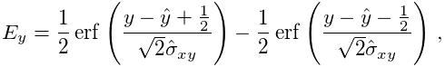
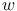
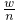
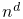
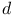
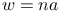
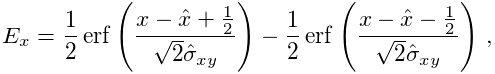

Averaged shifted histograms
This visualization algorithm uses a density estimation approach based on averaged shifted histograms [1]. In the one-dimensional case, this method works by averaging  histograms with the same bin width , but with the origin of each histogram shifted by  from the previous histogram. In the multidimensional case, there are  multidimensional histograms averaged in total, i.e., for shifts in each of the  dimensions. In our implementation, the width of the histogram bin is determined as , where  is the pixel size of the super-resolution image. The number of shifts in the lateral and axial directions can be specified independently.
See also
References
- [1] (1985) Averaged shifted histograms: effective nonparametric density estimators in several dimensions. The Annals of Statistics 13 (3), pp. pp. 1024–1040. External Links: Link Cited by: Averaged shifted histograms.
Generated on Sun Oct 4 04:18:14 2015 by LaTeXML ![[LOGO]]()